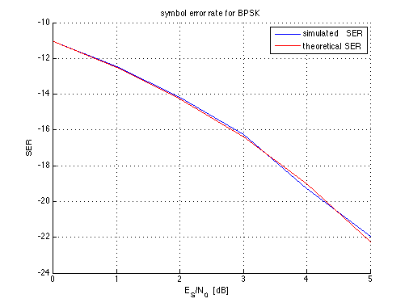

Symbol Error Rate for BPSK
Copyright 2007 Telecommunications Lab
T = .2; % Symbol duration f_sa = 20; % Sample frequency delta_t = 1/f_sa; symbols_per_sim = 100; ES_N0_dB = [0:5]; sims_loops = 1e3; %****************** send filter ************************ h_tx = ones(T/delta_t,1)*1/sqrt(T); %********************************** chan = ricianchan(1/f_sa,1,18); ES_N0_lin = 10.^(0.1*ES_N0_dB); % ES/N0 SER = [] % SER_rice =[] for current_ES_N0 = ES_N0_lin sigma = sqrt((1/current_ES_N0)/(2*delta_t )) sym_err = 0; for inner_loop = 1:sims_loops alpha_ = randn(symbols_per_sim,1)*2-1; % Generate bits alpha = sign(alpha_); s(1:T*f_sa:T*symbols_per_sim*f_sa,1) = alpha*f_sa; % Generate signal s(t) s_TX = conv(s,h_tx)./f_sa; % Signal that can be sended over the channel s_RX = s_TX + sigma*randn(length(s_TX),1); % Add noise r = conv(s_RX, conj(flipud(h_tx)))./f_sa; % Matched filter r_sampled = r(T*f_sa:T*f_sa:T*f_sa+T*f_sa*symbols_per_sim-1); % Sampling r_sign = sign(r_sampled); % threshold decision sym_err = sym_err + sum(abs(alpha-r_sign))/2; % compute sym_err end SER = [SER; sym_err/(length(alpha)*inner_loop)]; % SER end % % for current_ES_N0 = ES_N0_lin % % sigma = sqrt((1/current_ES_N0)/(2*delta_t )) % sym_err_rice = 0; % for inner_loop = 1:sims_loops % alpha_ = randn(symbols_per_sim,1)*2-1; % Generate bits % alpha = sign(alpha_); % s(1:T*f_sa:T*symbols_per_sim*f_sa,1) = alpha*f_sa; % Generate signal s(t) % % s_TX = conv(s,h_tx)./f_sa; % Signal that can be sended over the channel % s_RX_Rice=filter(chan,s_TX); % % r_rice=conv(s_RX_Rice, conj(flipud(h_tx)))./f_sa; % Matched filter % r_sampled_rice = r_rice(T*f_sa:T*f_sa:T*f_sa+T*f_sa*symbols_per_sim-1); % Sampling % r_sign_rice = sign(r_sampled_rice); % threshold decision % sym_err_rice = sym_err_rice + sum(abs(alpha-r_sign_rice))/2; % compute sym_err % % end % % SER_rice = [SER_rice; sym_err_rice/(length(alpha)*inner_loop)] ; % end %************************************* Plotting ********************************** SER=10*log10(SER); % SER_rice=10*log10(SER) hold on plot(ES_N0_dB, SER); % plot(ES_N0_dB, SER_rice) title('symbol error rate for BPSK') xlabel('E_S/N_0 [dB] ') ylabel('SER') grid on hold on Ps = 1/2 * erfc( sqrt( ES_N0_lin ) ); %Theoretical SER Ps=10*log10(Ps) plot(ES_N0_dB,Ps,'r') legend('simulated SER','theoretical SER') hold off;
